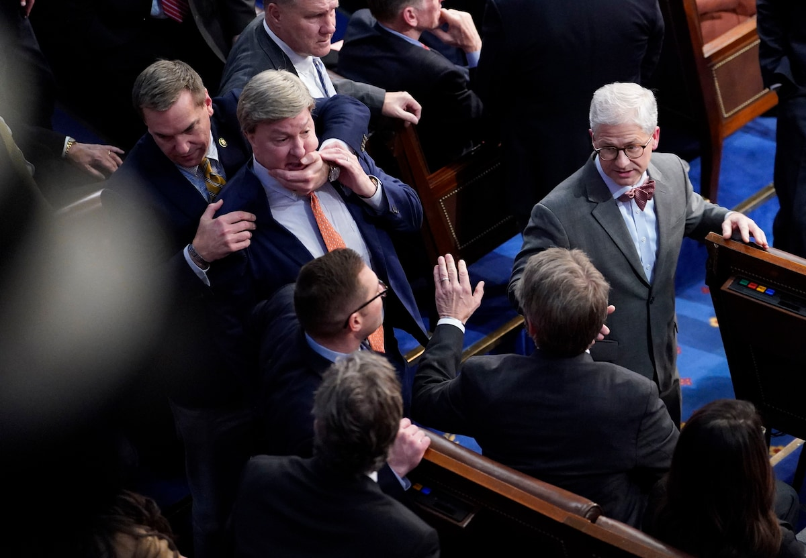

Aliens unterbrechen Artemis 1 Start
Republikaner nach Kritik an Trumps kleinen Händen zum schweigen gebracht
Bei der Wahl des Sprechers des Repräsentantenhauses äußerte ein mutiger Republikaner Kritik an Trumps kleinen Händen. Darauf hin versuchte einer seiner Kollegen ihm den Mund zuzuhalten, dieser Versuch scheiterte jedoch, da seine Hände nach Burger schmeckten und der Repräsentant aus Instinkt zubiss. Gewalt in der Republikanischen Partei hat stark zu genommen seit dem 6 Januar. Viele Amerikaner sind schokiert wie die Politker die immer für Waffen und Rechtsextremisten waren, nun für Gewalt sind.
"Eine gute Hexenverbrennung hat noch nie jemandem geschadet" ~ Julian Reichelt
In unserem Interview mit Julian Reichelt sprechen wir über die Irrelevanz von Fakten und Wahrheit, Freiheit und die Verwendung von falschen Zitaten. Trotz unserer neutralen Fragen verließ Herr Reicheilt das Interview schlagartig.